JoComunico. Què és? Instal·lació a LliueX.
Què és el JoComunico?
El Jocomunico és una aplicació gratuïta i lliure (Creative Commons CC-BY-NC) de Comunicació Augmentativa i Alternativa (CAA) pensada per a persones amb trastorns greus de la parla que es comuniquen amb pictogrames.
El principal atractiu és que expandeix de manera automàtica el llenguatge telegràfic, derivat de l’ús de pictogrames, a llenguatge natural en català i en castellà. Per exemple, un conjunt de pictogrames com ara “jo anar escola demà”, es converteix en una frase natural: “Demà aniré a l’escola”. L'aplicació és pionera en aquest àmbit i, a més, ofereix una gran flexibilitat pel que fa a la construcció d’oracions i a la possibilitat d’afegir vocabulari personalitzat.
L’aplicació també disposa d’un sistema de predicció de pictogrames que aprèn de l’ús que en fa l’usuari però que també té en compte la informació semàntica dels pictogrames i part del context de la conversa.
A més, té un historial que guarda les últimes frases generades, alhora que permet la creació de carpetes, ja siga amb aquestes frases o amb altres introduïdes mitjançant el teclat. Aquesta funció redueix el temps de comunicació i ofereix la possibilitat de preparar converses amb antelació.
El projecte ha estat desenvolupat per Joan Pahisa, en el marc d'un doctorat, amb la col·laboració de la Fundació Adecco, Telefònica i Eriksson, a través del programa Talentum Startups.
Inicialment, l'aplicació es trobava disponible vía web, i per a Mac i Windows, pel que vam contactar amb els membres de l'equip LliureX, i ara també està disponible per a aquest sistema.
Personalització de l'aplicació
El joComunico ofereix diverses opcions d'accessibilitat: accés a la interfície de manera tàctil, mitjançant un o dos polsadors o amb el ratolí a l'ordinador; sistema d’encercament àmpliament configurable; selecció per clic i selecció per temps configurables; creació de panells totalment personalitzables; servei en línia de síntesi de veu o accés a les veus del sistema en la versió sense connexió a Internet (SAPI i Microsoft Speech Platform per a Windows, veus de VoiceOver per a X Mac OS, i les veus de LliureX TTS -Google i Festival- per a LliureX), etc.
Altres usos
joComunico pot ser una eina que ajude els logopedes a treballar diferents aspectes del desenvolupament del llenguatge, com per exemple el temps verbals, els tipus de frases (ordres, preguntes, desitjos, negacions, etc.) o l’estructuració de frases, entre d'altres. També pot animar els usuaris avançats de CAA basada en pictogrames a fer el pas cap a la lectoescriptura.
Usuaris potencials
Jocomunico és una aplicació pensada per a persones amb trastorns greus de la parla que es comuniquen amb pictogrames, incloent-hi usuaris amb:
- Discapacitat física: lesió medul·lar, esclerosi múltiple, ELA, malalties neuromusculars…
- Paràlisi cerebral
- Trastorn de l’espectre autista
- Dany cerebral: ictus, traumatisme cranioencefàlic...
- Discapacitat intel·lectual
- Gent gran
Instal·lació a LliureX
El joComunico està disponible als repositoris de LliureX. Per tal d'instal·lar-lo, podem buscar-lo bé al gestor de paquets Synaptic (paquet lliurex-jocomunico) o bé a la botiga d'aplicacions (LliureX Store):
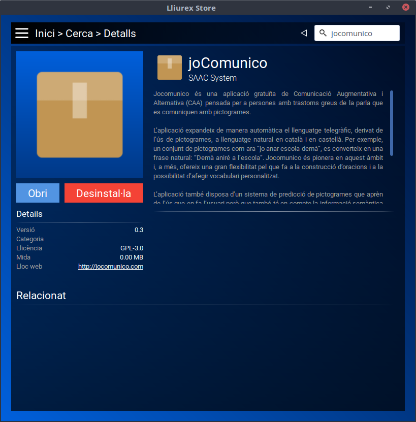
Com veurem, el JoComunico requereix de la instal·lació d'un gran nombre de programari addicional. Això es deu a que l'aplicació requereix d'un servidor web i de bases de dades que no ve instal·lat per omissió a les versions d'escriptori de LliureX.
Una vegada descarregat tot el programari addicional, és possible que ens faça algunes preguntes per tal de configurar-ne alguna part, com ara la contrasenya d'administrador del servidor de bases de dades. En aquest punt, podem deixar la contrasenya en blanc, ja que LliureX controlarà automàticament aquestes contrasenyes.
Quan acabe la instal·lació, podem accedir a l'aplicació a través del menú de LliureX, a l'apartat d'educació especial.
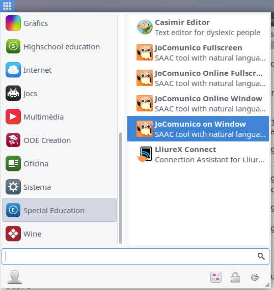
Com veurem, tenim vàries formes d'execució del JoComunico:
- JoComunico a pantalla completa
- JoComunico en línia a pantalla completa, per accedir a la versió de la web del JoComunico, en lloc de la versió instal·lada (si només volem fer això, podem utilitzar la versió web directament des de www.jocomunico.com)
- JoComunico en una finestra
- JoComunico en línia en una finestra
Primers passos amb el JoComunico
Si accedim a l'aplicació joComunico que tenim instal·lada, se'ns mostra la següent pantalla d'inici:
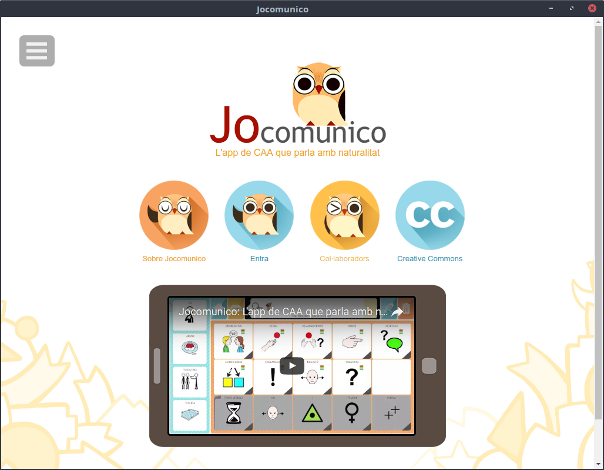
Com veiem, a la part superior-esquerre tenim el menú, i al centre, les quatre opcions principals.
Quan accedim per primera vegada, el primer que cal fer és crear-nos un usuari. Per a això farem clic en el botó "Entra", per anar a la següent pantalla:
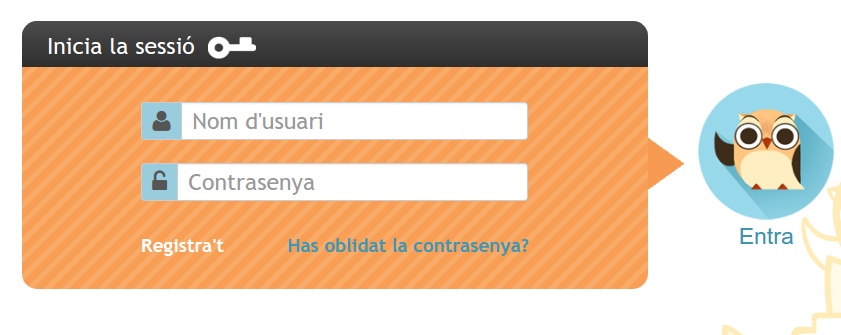
Aci se'ns demana un nom d'usuari i una contrasenya. Com que encara no tenim un usuari creat, haurem de fer-ho amb l'opció "Registra't".
En el registre se'ns demanen dades com el nom d'usuari que desitgem tindre, la contrasenya, el nom i cognoms, l'adreça electrònica o l'idioma per defecte, entre d'altres:
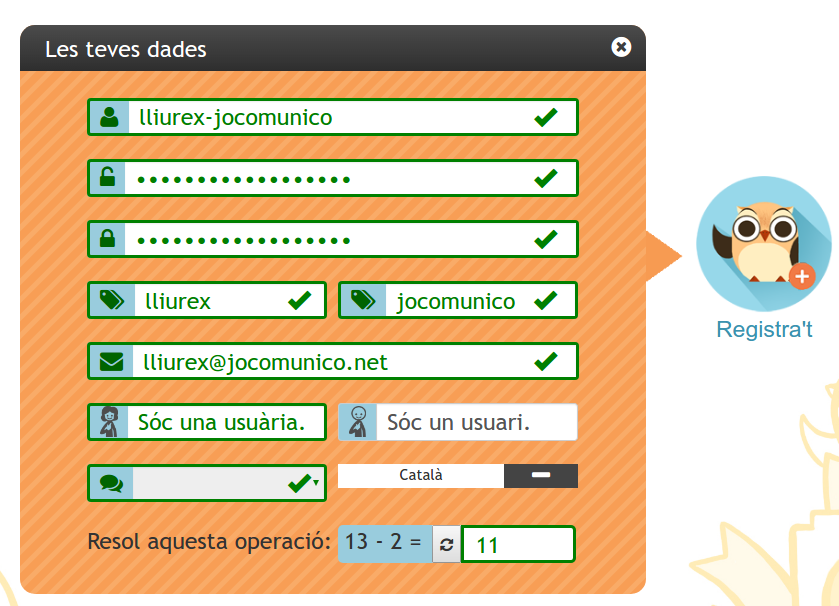
Cal tenir en compte, que com que es tracta d'una instal·lació al nostre sistema local, l'adreça de correu electrònic s'utilitza, de manera que podem posar qualsevol adreça de correu que respecte el format habitual (xxx@xxx.xxx) . Si fem ús de la versió online, aquest correu s'utilitzarà per realitzar la verificació del compte que hem creat.
Una vegada hem introduït les nostres dades, fem clic a "Registra't" per finalitzar el registre. Veurem la següent finestra de confirmació:
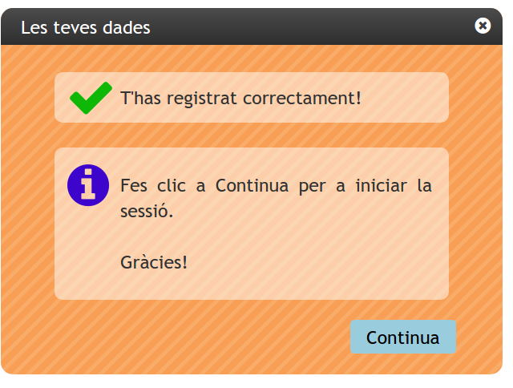
I continuarem, per anar de nou a la finestra d'inici de sessió, on ja podrem introduir el nostre usuari i contrasenya, i farem clic en "Entra".
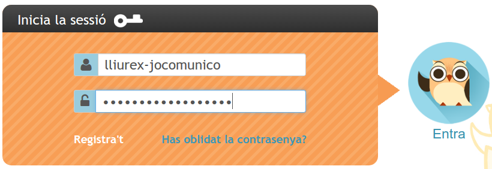
Veurem una finestra de configuració, amb les dades de l'usuari, que podrem modificar, i amb la configuració de l'aplicació. El més important que haurem de configurar en aquests moments, son les veus, amb connexió i sense connexió:
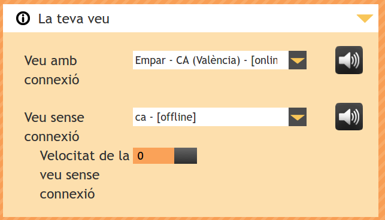
En aquest cas, com que no ens trobem a l'aplicació en línia, sinò que la tenim instal·lada a la nostra màquina, només seran funcionals les veus sense connexió. Les veus amb connexió, entre les que es troba la veu valenciana "Empar", només funcionen a l'aplicació online.
En aquesta mateixa finestra de configuració, trobem diverses opcions, com la veu de les caselles, la ubicació de la barra d'eines, opcions de la interfície, el nombre de pictogrames per al sistema de predicció, la configuració del maquinari, si anem a utilitzar ratolí/pantalla tàctic o polsadors, i el sistema d'escombratge, en cas que utilitzem polsadors:
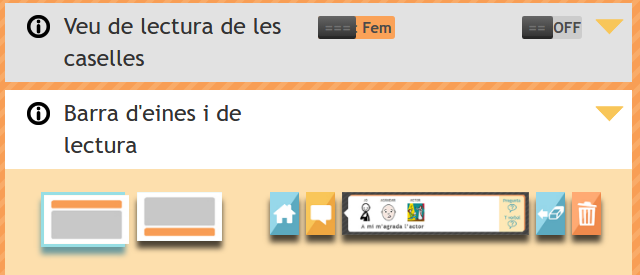 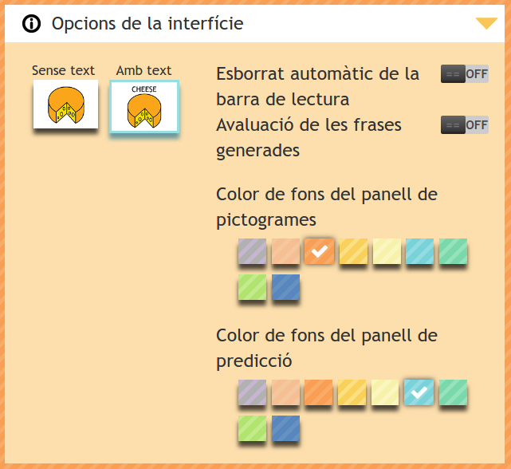 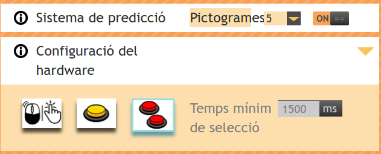 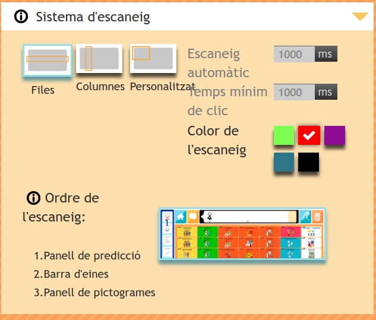
Una vegada hem triat les opcions, podem fer clic en "Desa", i anirem, finalment al n ostre panell de control general:
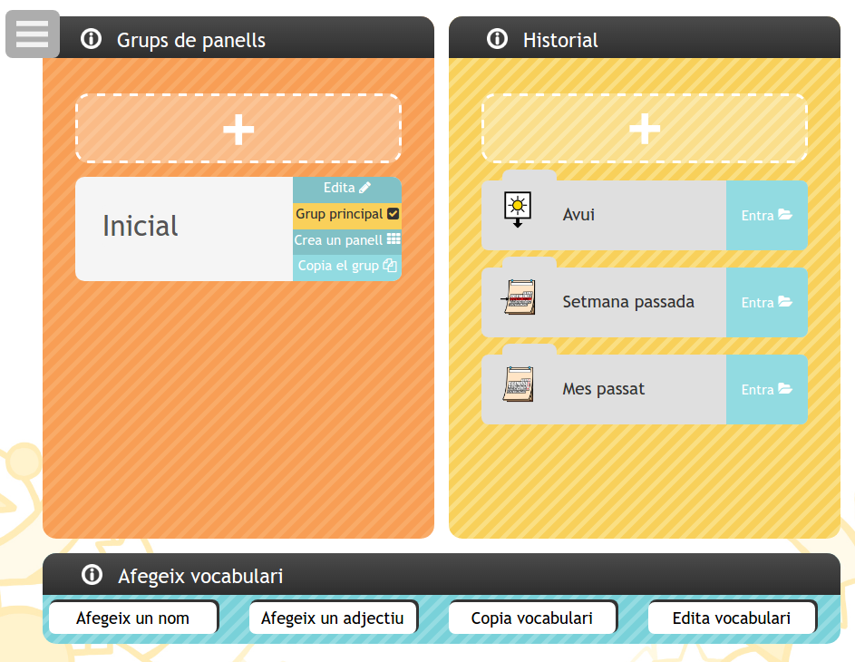
Des d'aci, podrem gestionar els nostres panells, consultar l'historial de frases, o afegir vocabulari nou.
Més endavant veurem com treballar amb tot açò. De moment, anem a fer ús d'aquest panell principal per tal de veure unes pinzellades del funcionament.
Així doncs, fem clic al menú del joComunico i seleccionem l'opció "Inici": 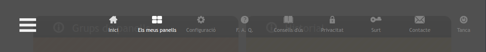
Per veure el següent tauler básic per defecte, on podrem fer frases curdes del tipus "M'agrada", "Anem a...", "Vull", o "Menjar".
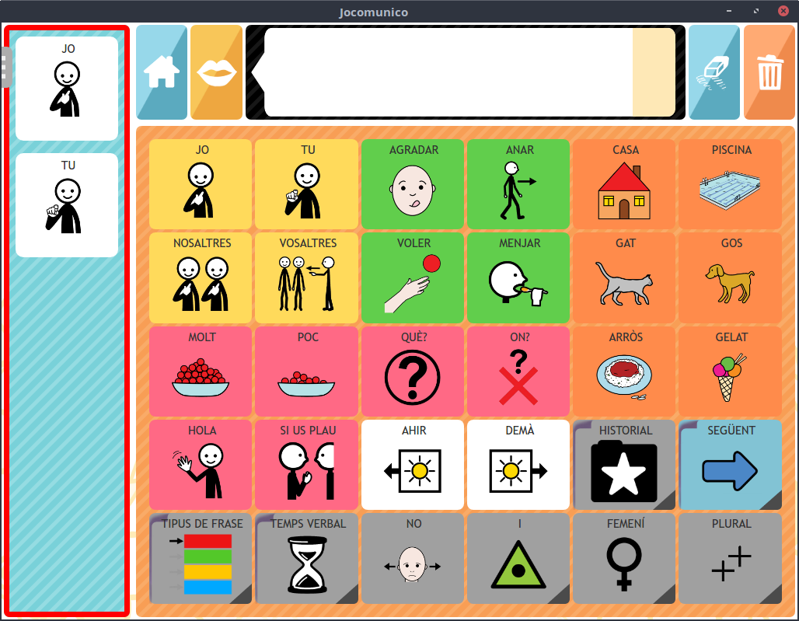
En aquest podrem anar fent clic als diferents pictogrames per anar construint frases, com per exemple:
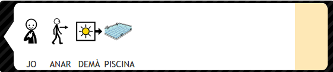
Que quan fem clic al botó de reproducció, es convertirà en la següent frase que es podrà escoltar:
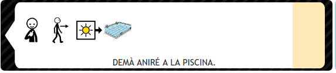